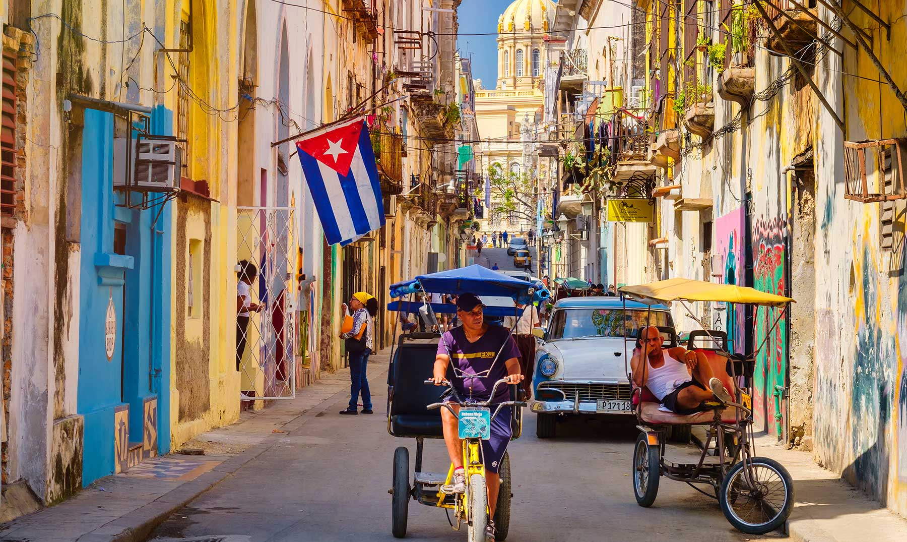
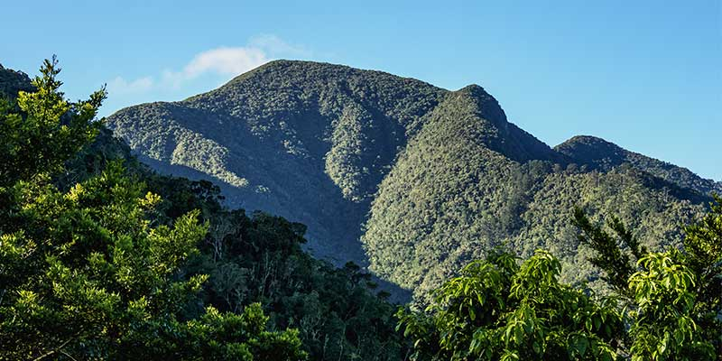
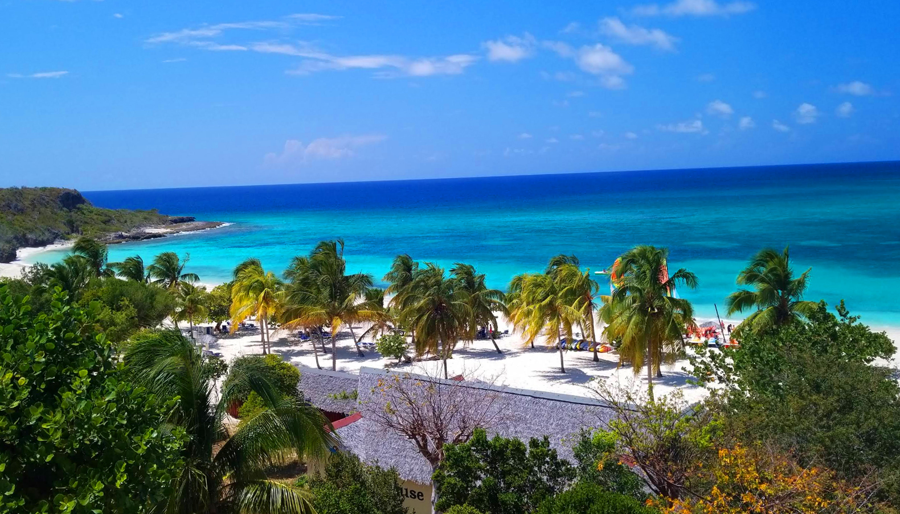
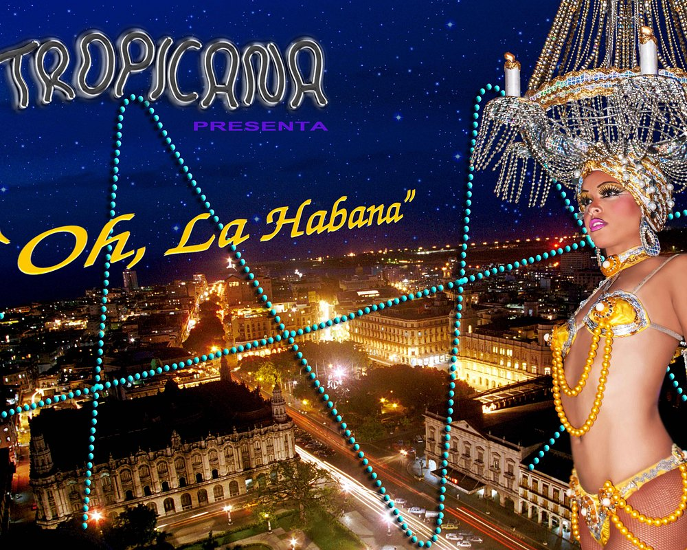

Calles y arquitectura de una ciudad histórica.
Ofertas destacadas.
Descubre la historia, la arquitectura colonial, museos y las tradiciones de Cuba. Descubre más
- La Habana
- Holguín
- Santiago de Cuba
Duración: 5 días
US$ 350 por persona
Vive experiencias inolvidables conociendo la cultura, las playas y los paisajes de Cuba.

Calles y arquitectura de una ciudad histórica.
Descubre la historia, la arquitectura colonial, museos y las tradiciones de Cuba. Descubre más
Duración: 5 días
US$ 350 por persona

Parques naturales de Cuba.
Relájate y disfruta de paisajes tropicales. Paseos por paisajes naturales, montañas y espacios verdes. Descubre más
Duración: 4 días
US$ 280 por persona


Paisaje de playa para unas vacaciones, bares y discotecas.
Combina ciudades históricas, cultura, gastronomía y días de descanso en la playa, Bares y discotecas. Itinerarios que reúnen cultura, naturaleza y tiempo libre. Descubre más
Duración: 7 días
US$ 490 por persona